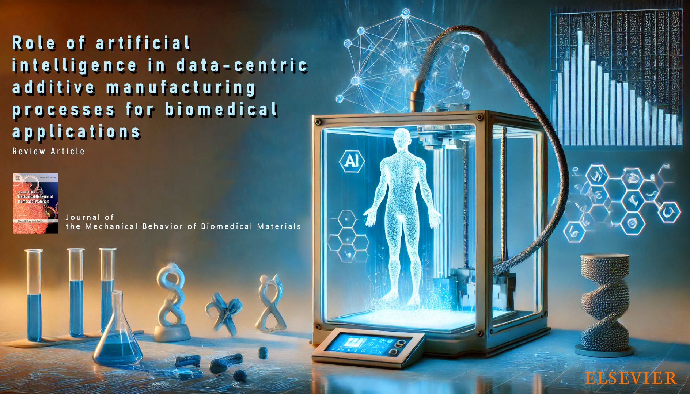
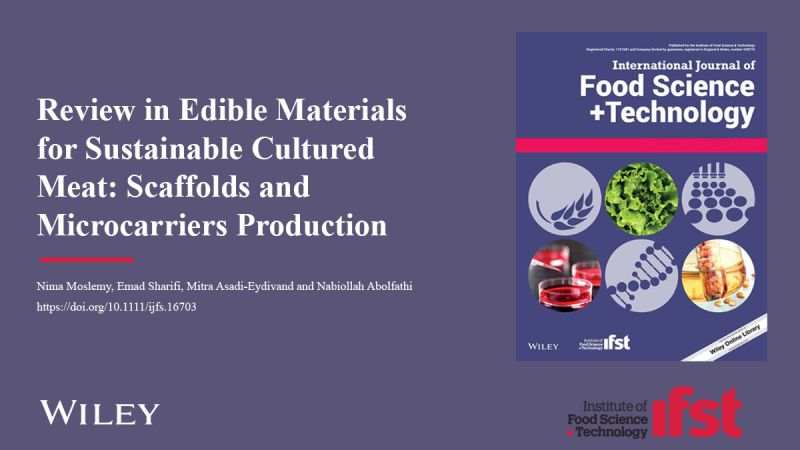

NIMA MOSLEMY
Additive Manufacturing (LPBF) • Lattice Metamaterials • Mechanical Simulation & FEA • AI & Open-Source Software
School of Engineering and Physical Sciences, Heriot-Watt University, UK
About Me

Greetings — I am Nima Moslemy, a PhD Researcher in Mechanical Engineering and Additive Manufacturing at Heriot-Watt University, working on an EPSRC-funded research programme.
My work bridges physical engineering and intelligent software: combining Laser Powder Bed Fusion (LPBF), architected lattice metamaterials, and finite element simulation (FEA) with machine learning for in-situ defect detection and high-performance desktop AI applications.
Research Interests
- Metal Additive Manufacturing (LPBF / SLM)
- Architected Lattice Structures & Metamaterials
- Finite Element Analysis & Multi-Physics Simulation
- Biomedical Engineering & 3D Bioprinting
- Patient-Specific Implants & Prostheses
Core Expertise
- AI & Deep Learning for Defect Detection
- Native Systems & AI Software (Python, C++20, C#)
- Mechanical & Biomechanical Characterization
- CAD / Implicit Modeling (nTopology, SolidWorks)
- Medical Image Processing (Materialise Mimics/Magics)
Featured Software & GitHub Projects
FERDOWSI v2 — Above-Cursor AI Writing Assistant, Voice Dictation, Read Aloud & Bilingual Dictionary
A high-performance, system-wide Windows desktop AI writing and voice assistant engineered with a tri-language architecture (C++20 Win32/MSAA Hook DLL + C# WPF Non-Activating UIA Overlay + Python 3 AI Engine). Summons directly above your cursor in any Windows app (Edge, Chrome, Word, Notepad, Telegram, VS Code) with sub-second cloud and local inference.
LPBF Defect Detection
Machine learning models, computer vision pipelines, and simulation-based quality assurance tools for detecting anomalies and defects in 3D-printed metal components produced by Laser Powder Bed Fusion (LPBF).
ModernTimer for Windows
A modern, ultra-lightweight portable timer and stopwatch for Windows built in C++ with Direct2D hardware-accelerated rendering. Single small executable with progress ring, compact, bar, and full-screen modes.
Experience & Education
Professional Experience
Postgraduate Researcher
Heriot-Watt University, Edinburgh, UK
- EPSRC Doctoral Researcher in LPBF Additive Manufacturing, Lattice Structures & AI Defect Detection
- Teaching Assistant for Design and Manufacture course
Research Assistant
Bio Fabrication Lab (BFL), Amirkabir University of Technology
- Teaching Assistant for Strength of Materials (II) and 3D Printing
- Conducted research on edible scaffolds and 3D bioprinting
Head of Manufacturing Department
CMFRC, Shariati Hospital, Tehran
- Designed and manufactured over 600 patient-specific prostheses (SLM, PolyJet, DLP, FDM)
- Led clinical AM device workflow and infrastructure optimization
Academic Education
PhD in Mechanical Engineering
Heriot-Watt University, Edinburgh, UK
Supervisors: Dr. F. Shalchy, Dr. A. Ozel, Dr. M. Ikhlaq
MSc in Biomechanical Engineering
Amirkabir University of Technology (Tehran Polytechnic)
"Design and fabrication of edible scaffolding for use in cultured meat by 3D bioprinting."
BSc in Biomechanical Engineering
Amirkabir University of Technology (Tehran Polytechnic)
"Design and manufacture of RTV-2 silicone 3D printer."
Technical Arsenal
Manufacturing & Experimental
AI, Programming & Simulation
Selected Publications
Role of artificial intelligence in data-centric additive manufacturing processes for biomedical applications
Journal of the Mechanical Behavior of Biomedical Materials, Volume 166, June 2025
Review in Edible Materials for Sustainable Cultured Meat: Scaffolds and Microcarriers Production
International Journal of Food Science and Technology
Development of an Edible Scaffold Utilizing Isolated Soy Protein for Sustainable Cultured Meat Production through 3D Bioprinting
[Under Review]
Research Highlights

AI in Additive Manufacturing
Review of Artificial Intelligence in Data-Centric Additive Manufacturing Processes for Biomedical Applications.
View LinkedIn Post
Sustainable Cultured Meat
Development of edible scaffolds and microcarriers focusing on bio-materials and their advanced 3D bioprinting applications.
View LinkedIn PostContact Me
Location
Heriot-Watt University
Edinburgh, United Kingdom